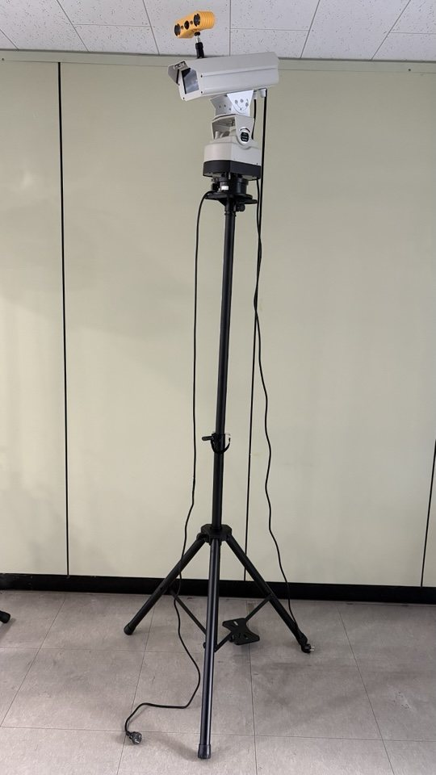
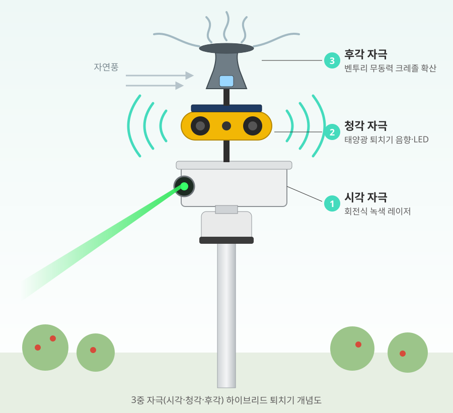
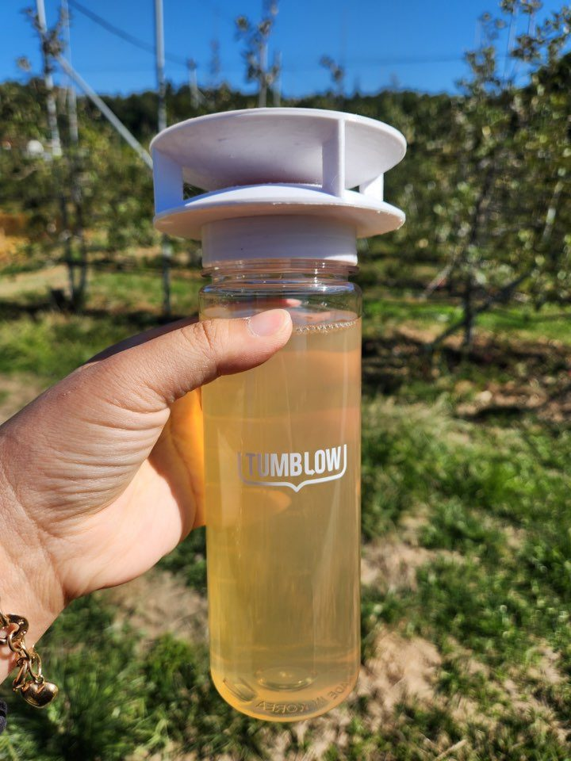
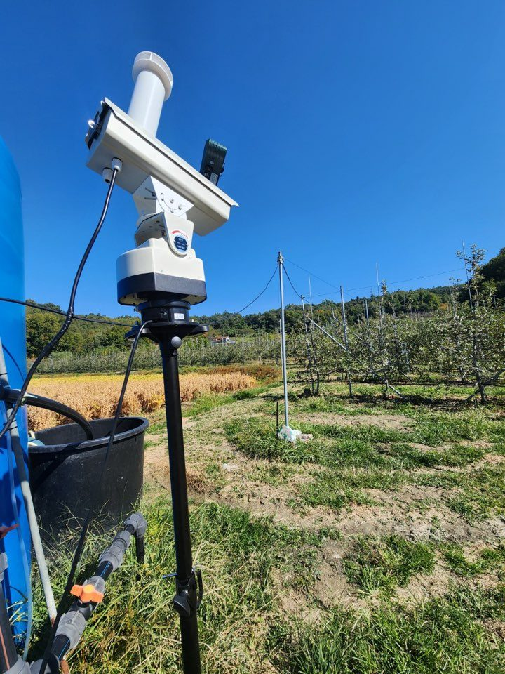
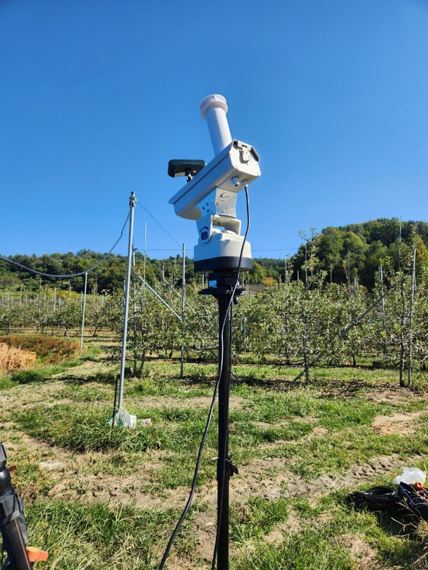
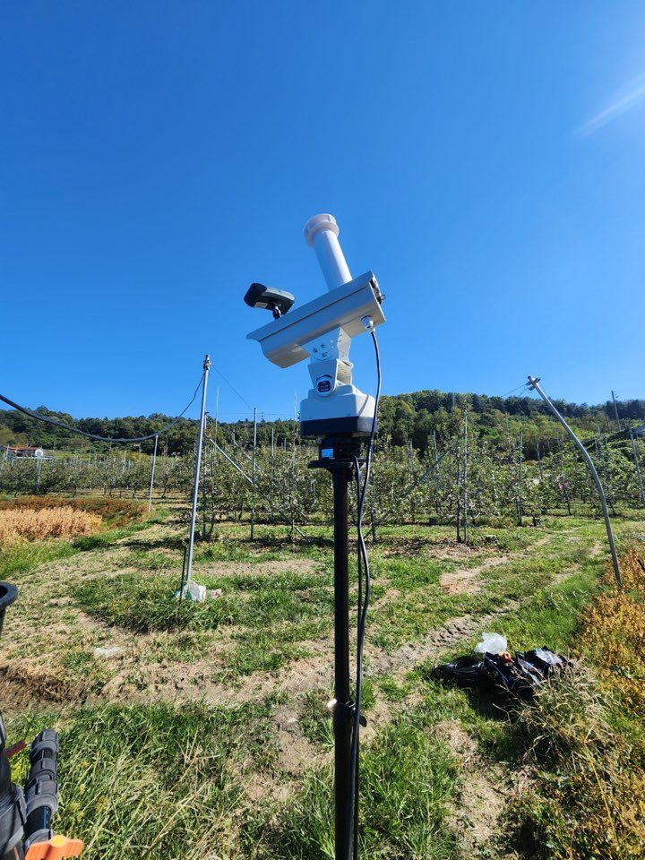
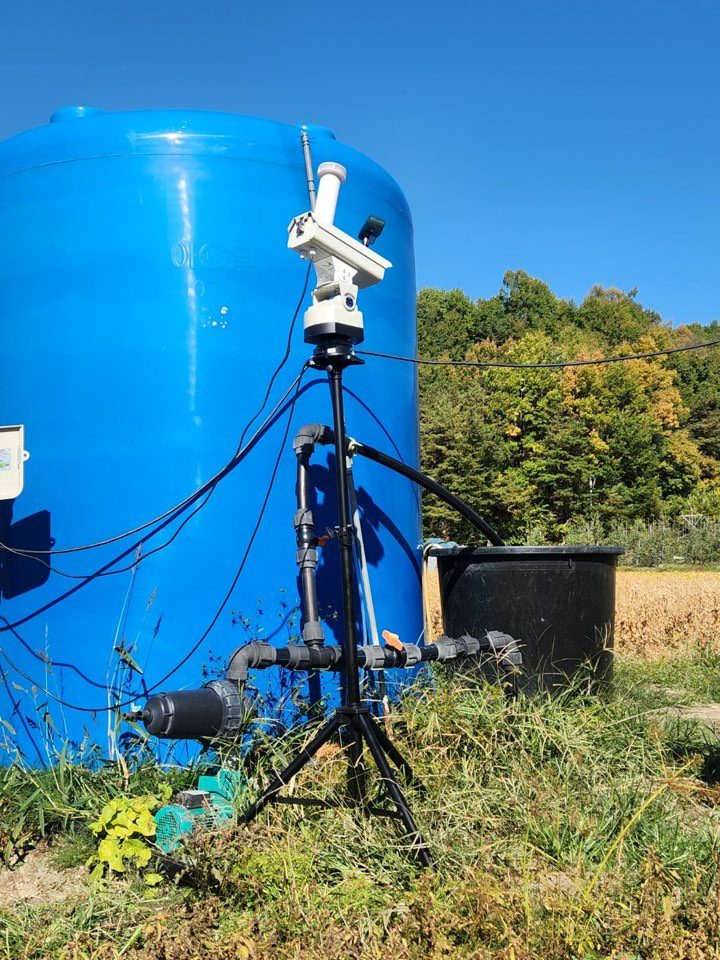
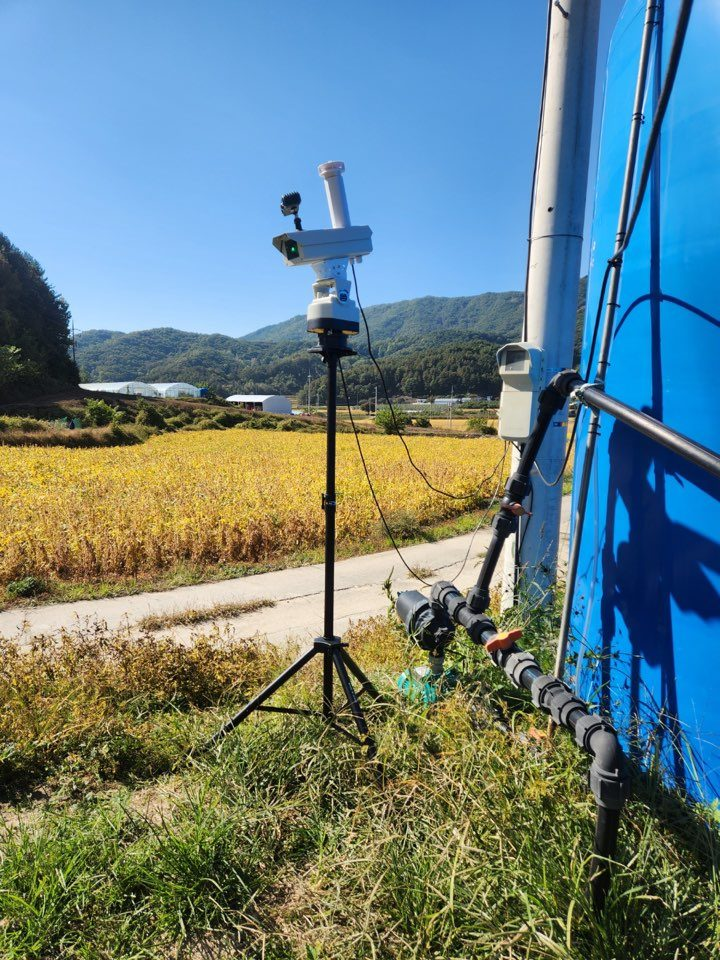

자동 회전 녹색 레이저 위에 태양광 야생동물퇴치기를 결합한 제품입니다. 레이저가 넓은 범위를 비추는 동시에, 태양광 퇴치기가 가까이 다가오는 동물의 움직임을 감지해 경보음과 LED 점멸로 쫓아냅니다. 태양광 퇴치기는 태양광으로 스스로 충전되어 별도 배선이 필요 없습니다.

| 레이저 | 1W 녹색 530nm 반도체 레이저 |
|---|---|
| 회전 각도 | 355° |
| 조사 거리 | 최대 200m (1W 기준) |
| 입력 전압 | AC 100V ~ 230V |
| 보호 등급 | IP65 |
| 태양광 패널 | 5V / 130mA 단결정 |
|---|---|
| 배터리 | 3.7V / 1200mAh 리튬 |
| 충전 | 태양광 약 6시간 / DC 전원 겸용 (2시간 미만) |
| 감지 거리 | 2.5 ~ 8m (주변 온도에 따라 다름) |
| 작동 모드 | ① 24시간 사이렌 + 점멸 ② 24시간 점멸 ③ 야간 점멸 + 소리 ④ 야간 점멸 |
| 내장 음원 | 13가지 (개 짖는 소리, 총소리, 사자 포효, 독수리 울음, 수탉 울음, 사이렌 등) |
| 조명 | 적/청 LED 점멸 |
| 작동 시간 | 완전 충전 시 비 오는 날에도 8~10일 사용, 대기 최대 300일 |
| 방수 등급 | IP55 |
K-U시티 예천군 지원사업 「예천군 고부가가치 과수 보호를 위한 ICT 기반의 3중 자극 지능형 하이브리드 조류 퇴치 시스템 개발」
레이저(시각)와 태양광 퇴치기의 음향(청각)에 크레졸 기피제(후각)를 더한 3중 자극 퇴치기입니다. 레이저 모듈 상단에 벤투리 효과를 이용한 소형 확산 장치를 달아, 전기 없이 자연풍만으로 기피제 증기를 360° 전방위로 퍼뜨립니다. 시각·청각·후각을 동시에 자극해 조류가 한 가지 자극에 익숙해지는 것을 막습니다.

3중 자극 퇴치기를 감천과 청송의 과수원에 설치해 현장 시험을 진행하고 있습니다. 회전식 녹색 레이저와 태양광 퇴치기, 크레졸 확산 용기를 하나의 삼각대에 함께 설치했습니다.






과수원뿐 아니라 축사, 양식장, 태양광 발전소, 송전탑 등으로 적용을 넓혀 갈 예정입니다. 상세 사양은 개발 완료 후 공개됩니다.